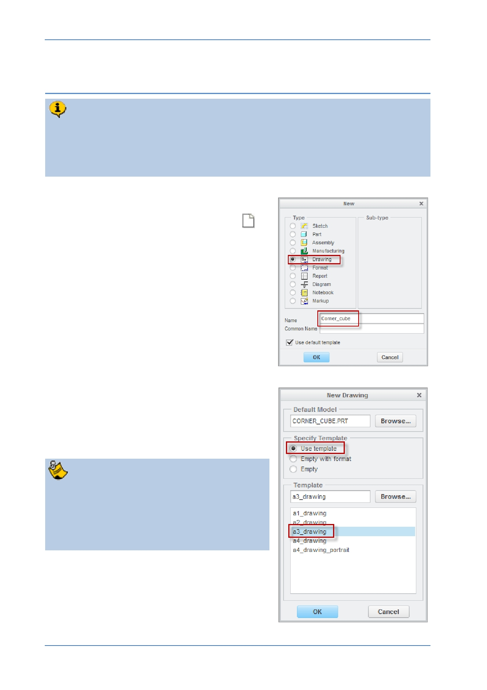

PTC Academic Program
Step 2: New engineering drawing
Drawing templates in Creo Parametric will use the part open on screen as the
basis for an engineering drawing. The A3/B size templates automatically create a
border, title block, three orthographic views and a pictorial representation!
Dimensions are easily imported from the 3D model and annotations added.
1. Starting a new drawing:
In the Quick Access toolbar, click New
to
start a new file.
In the New dialog box, click to select
Drawing as the model type.
Type Corner_cube in the Name field then
click OK .
In the Template section, select which size
drawing you would like to use and click OK .
In this example, we have chosen
a3_drawing. a3_drawing .
Depending which template you select, you
will see slightly different arrangements of
views.
For example the a4_drawing template has
only two orthographic views.
© 2012 PTC
Creo Parametric 2.0 Primer
Page 91